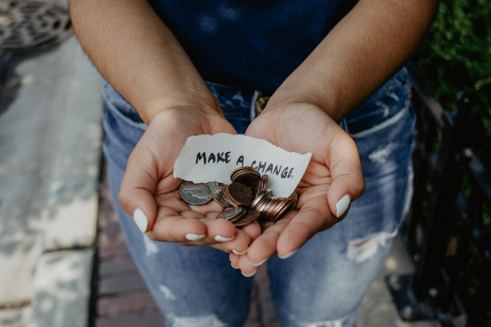

Marketing your nonprofit is not much different than marketing a for profit business. The tools are the same and your messaging/graphic should garner the same result – hitting your audience in all the feels. An emotional reaction will result in higher engagements, more donations, greater interest in getting involved with your organization, and ongoing support.
Now you’re wondering how, right? Here are some simple things to keep in mind as you’re building out your organizations marketing strategy:
- Always have your target audience top of mind.
- Know which social platforms they use most often.
- Understand their buying behaviors (this will tell you about their needs, if they have children, where they live, the types of sites they tend to visit, and so much more).
- Get to know what they care about (sites they visit, what type of content they engage with on both social and websites, what they post about, etc.)
- Know their general demographics
- 63% of donors prefer to give through online channels*, so your strategy should be heavily focused on digital marketing. (*resource: elevare)
- Content marketing is key. This goes beyond social media. Your content marketing should include:
- Social media
- Newsletters (email)
- Videos
- Blogs
- Impact reports
- Case studies
- Testimonials
- Consider if you have products, merchandise, and/or educational materials or courses to sell. Utilize ecommerce through social platforms to ease the user experience.
- Set up SMS campaigns.
- Develop a monthly giving program (subscription) and be very transparent about where the funds are going. Donors are likely to donate more often, and larger amounts, when they know exactly where their money is going.
- Build strategic partnerships. This could be with other NPOs with purpose-driven for profit companies.
- Use your volunteers! Your volunteers are there to support you and your mission. Encourage them to amplify your message by showing your appreciation through volunteer spotlights annual awards. The little things really make a difference.
There are so many strategies and tactics you can use but implementing and maintaining them is often a barrier for NPOs due to limited staff or volunteer base. Don’t hesitate to outsource this work to contractors and vendors who specialize in nonprofit marketing. This will allow you to focus on other areas of the organization that must be managed through someone on staff. That’s why Get Lagos Now exists. To take this time consuming, and often confusing, work off your plate.
Does your nonprofit need some marketing and advertising guidance? Visit getlagosnow.com/contact to schedule a consultation today.
